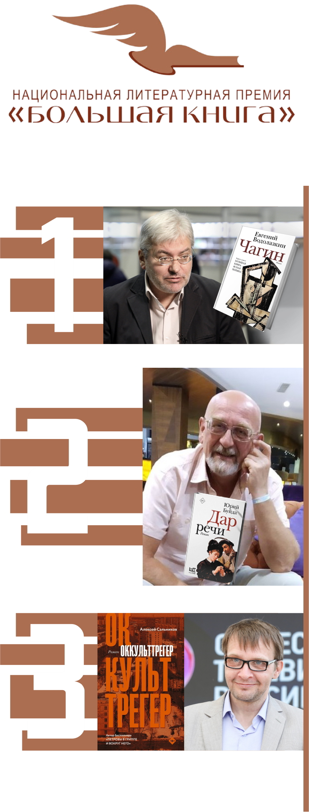

Премия «Большая книга» является одной из самых престижных литературных наград в России и ежегодно присуждается за лучшие произведения русской литературы. Она была учреждена в 2005 году и с тех пор стала одним из самых ожидаемых событий в литературной жизни страны.

В 2023 году первое место у романа Евгения Водолазкина «Чагин».
Трогательная, местами смешная, но безусловно трагическая история архивиста Исидора Чагина, обладающего уникальным даром ничего не забывать.
Трогательная, местами смешная, но безусловно трагическая история архивиста Исидора Чагина, обладающего уникальным даром ничего не забывать.
Приз читательских симпатий в 2023 году получил Захар Прилепин с книгой «Шолохов. Незаконный». Второе место зрители отвели Дмитрию Захарову с книгой «Комитет охраны мостов», а третье место занял Эдуард Веркин с романом «Снарк снарк».
Третье место - «Оккульттрегер» Алексея Сальникова.
Сальников предлагает свою мифологию современности, в которой ангелы и демоны совсем не такие, какими мы их себе представляли, а оккульттрегеры следят за теплом в городе. Главная героиня романа Прасковья Головнякова как раз из их числа. Ей двести лет, каждые четыре месяца она линяет, то есть, меняет внешность. А гомункулом, принявшим вид ребенка, она дорожит, поскольку без него ее жизнь перевернется…
Сальников предлагает свою мифологию современности, в которой ангелы и демоны совсем не такие, какими мы их себе представляли, а оккульттрегеры следят за теплом в городе. Главная героиня романа Прасковья Головнякова как раз из их числа. Ей двести лет, каждые четыре месяца она линяет, то есть, меняет внешность. А гомункулом, принявшим вид ребенка, она дорожит, поскольку без него ее жизнь перевернется…
Второе место - «Дар речи» Юрий Буйда.
Илья Штамм, в свой день рождения в 1983 году внезапно узнает, что его биологический отец - не кто иной как Борис Шкуратов, известный на всю страну журналист и телеведущий. В романе автор пытается объяснить, как прошлое человека влияет на его настоящее, способствует или препятствует будущему.
Илья Штамм, в свой день рождения в 1983 году внезапно узнает, что его биологический отец - не кто иной как Борис Шкуратов, известный на всю страну журналист и телеведущий. В романе автор пытается объяснить, как прошлое человека влияет на его настоящее, способствует или препятствует будущему.